W#12: Polishing Visuals
Material mostly from Dykes (2019)
Jan Lorenz
What you should have for your Data Story already!
Storyboard
Dykes’ Storytelling Arc
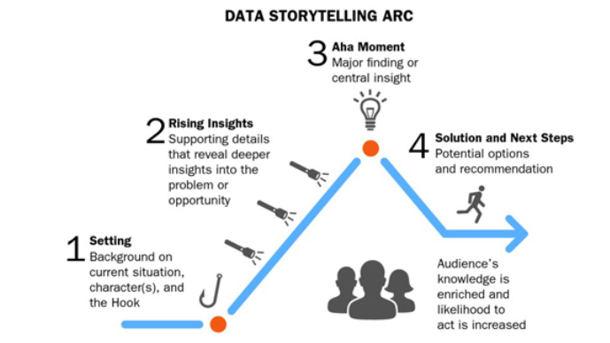Storyboard example
Storyboard for a presentation of the datastory The summer break effects on the CoViD-19 pandemic in Germany 2020-2022
Checklist: Datastory Presentation Essentials
Most important:
- What is your hook?
Make clear what the story is about. Provide context. - What is your main Point?
Select one among all the story points you have.
Then:
- What are the rising insights?
Story points to make one after the other from the hook to the main point. - What are the conclusion?
Depending on the assumed audience.
Slidedeck
Have most Visuals for your Story Points drafted in code!
On Visuals (Part 1): Setting the Scenes of Your Data Story
Double check for all your visuals!
Goals for Visual Storytelling
- As data storyteller, you bear the burden of comprehension - not your audience.
- Make it as easy as possible for your audience to understand your visuals and follow your overall story.
Principles Visual Data Storytelling
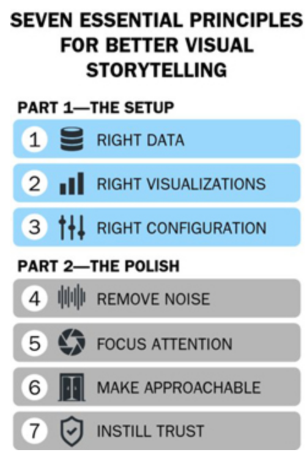
1. Visualize Right Data
Data Variations to Consider
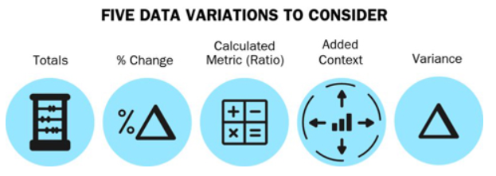1. Visualize Right Data: Example
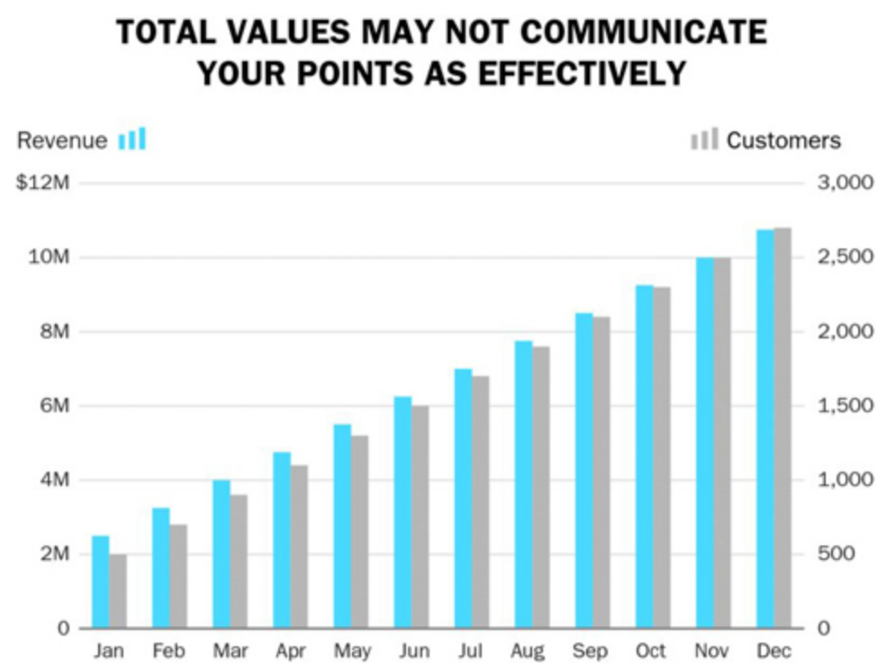
1. Visualize Right Data: Example
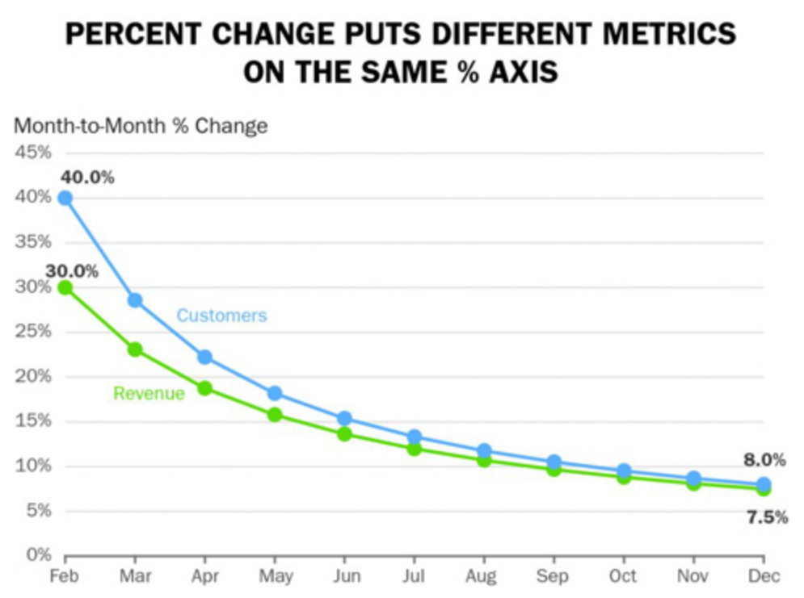
1. Visualize Right Data: Example
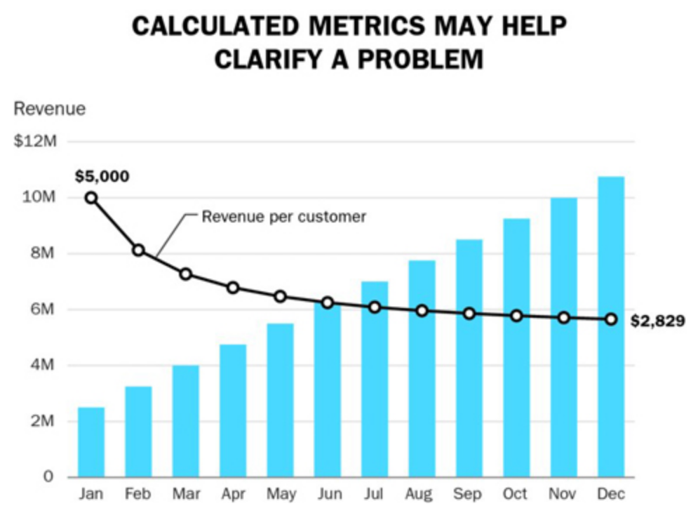
2. Right Visual: Choose best fitting
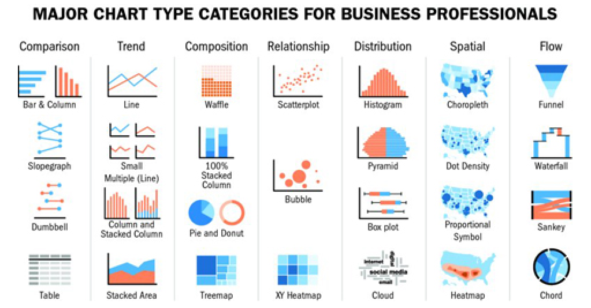2. Right Visual: Accurate comparison
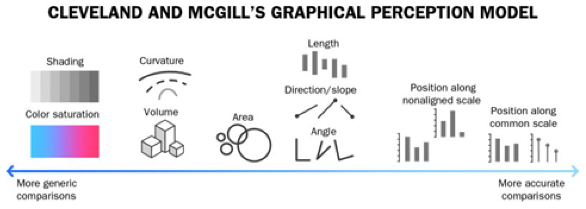
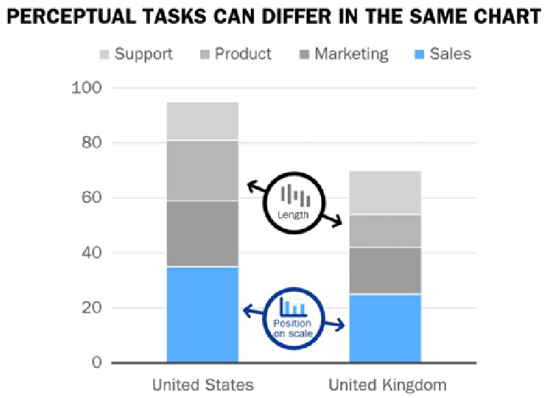
2. Right Visual: Bar Chart vs. Slope Chart
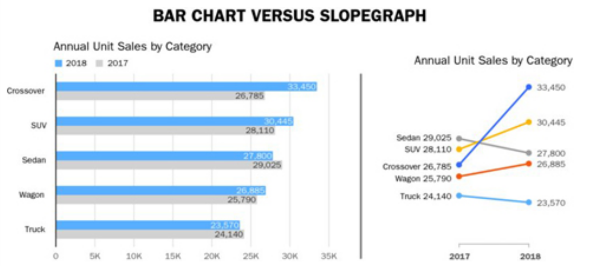2. Right Visual: Pie vs. Bars
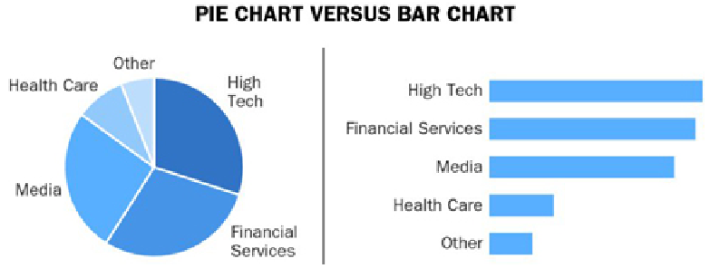3. Calibrate Visuals to Message
- Keep comparisons in close proximity
Put the things you compare close to each other - Provide a common baseline for comparisons
Can you provide a baseline for your comparison? - Ensure charts are consistent for comparisons
Do you use color consistently
3. Calibrate visual to message
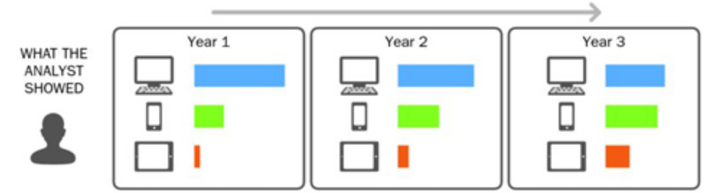3. Calibrate visual to message
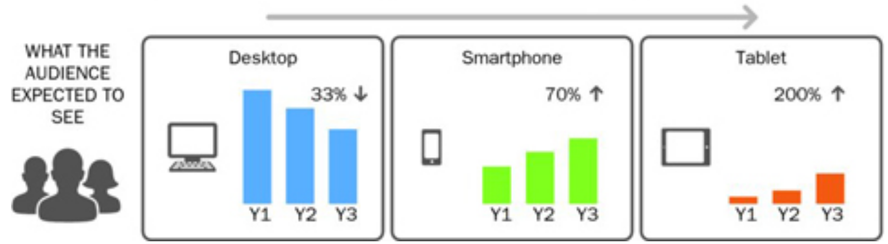3. Calibrate visual to message
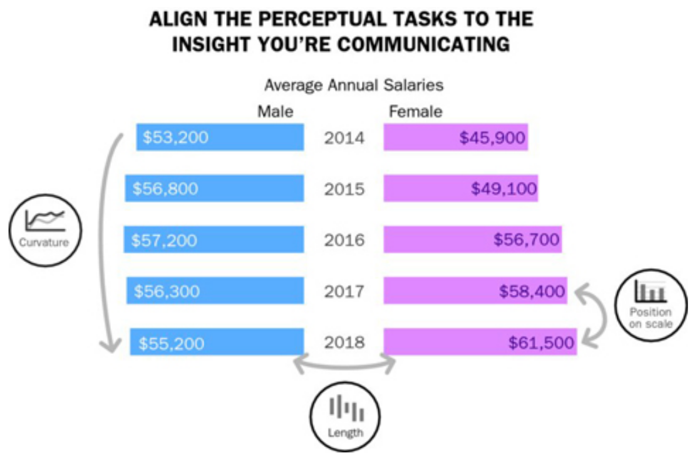
3. Calibrate visual to Message
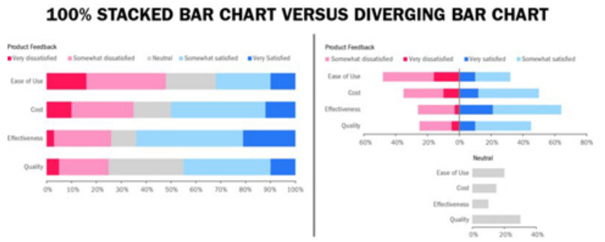On Visuals (Part 2): Polishing the Scenes of Your Data Story
Go through polishing checklists for all your visuals.
4. Remove unneccessary noise
- Remove surplus data
- Aggregate less important data
- Separate overlapping data
Should you facet a graphic?
Remove/reduce chartjunk
5. Focus attention on what is important
- Which color palettes?
- Use color vs. gray
- Use text (or other) annotations
- Try to find explanatory and not purely descriptive titles
6. Make data approachable and engaging
Make Your Data Approachable and Engaging
- Tips to Streamline Readability of Charts
- Tips for Using Reference Lines
- Tips for Formatting
- Tips for Convention Adherence
Practically:
- Make axis labels
- Consider direct labels
- Avoid vertical or diagonal text if possible
- Use simple axis increments, avoid scientific notation of numbers (no 1e6)
- Can you use meaningful guidelines, anchorlines, trendlines, shaded regions, gridlines
- Sort categories?
- Use transparency to show overplotting
- “Independent” variable on the x-axis
- …
7. Instill trust in numbers
Deceptive Practices to Avoid. Be careful with:
- Truncated y-axis
- Inconsistent date intervals
- Inconsistent binning
- …
You may do them unconsciously!.
Provide source information.

[MDSSB-MET-03: Visual Communication and Data Storytelling]